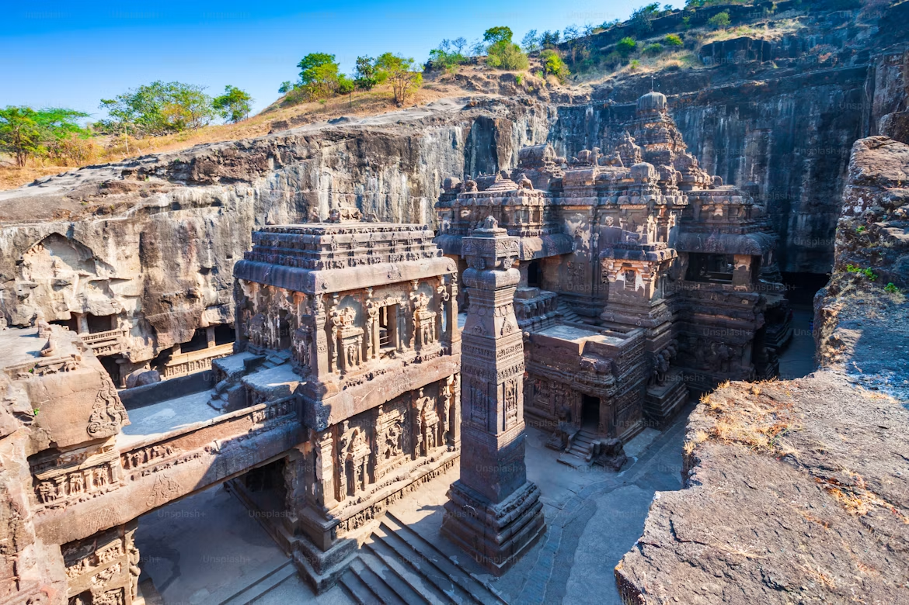

Reigned
c. 320–550 CE

The Gupta era is celebrated as India's Golden Age — a time of remarkable achievements in science, mathematics, literature, art, and philosophy under a flourishing imperial court.
The Gupta Dynasty rose in the early 4th century CE and ushered in a period of relative peace, intellectual freedom, and artistic brilliance across northern and central India. Its rulers patronized scholars, poets, craftsmen, and monks, leaving a cultural legacy that shaped South Asian civilization for centuries.
c. 320–550 CE
Pataliputra, later Prayag (modern Prayagraj)
Northern and central India from Bengal to Gujarat and Kashmir to the Narmada.
Classical Sanskrit literature, mathematics of zero, medical treatises, temple sculpture, and university learning.
Founded the imperial Gupta line, strengthened alliances through marriage, and laid the political foundation for the dynasty's expansion.
Known as the 'Indian Napoleon', he expanded Gupta power across the subcontinent and became a leading patron of arts and learning.
Guided the empire to its cultural peak, supporting poets like Kalidasa and scholars such as Aryabhata while consolidating trade and peace.
Aryabhata and other scholars wrote about zero, the decimal place system, lunar and solar eclipses, and the Earth's rotation.
Classical Sanskrit reached new heights with Kalidasa's poetry and drama, while scholarly treatises on law, grammar, and philosophy flourished.
Gupta sculpture and temple design created a graceful classical style seen in stone carvings, murals, and cave sanctuaries.
Pataliputra served as the imperial center for court, administration, and pilgrimage, while Prayag became a major cultural and religious hub during the later Gupta period.